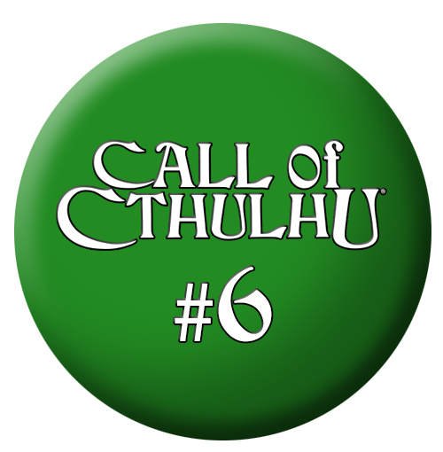

Marcus Bone got the zine-publishing bug courtesy of Dark Conspiracy (1991). In the late '90s, the license to publish the RPG was held by Ken Whitman and a few of his companies (first Archangel Entertainment, then Dynasty Publications). To publicize the upcoming second edition of the game (1998), Whitman was holding regular chats on the nascent internet. At a June 1998 chat, Bone suggested the creation of an electronic fanzine to support the game. The result was Demonground (1998-2002), which debuted a few months after Dark Conspiracy 2e, with editor-in-chief Bone supported by Michael Marchi and Geoff Skellams .
Demonground ran for 15 issues, all of which remain available at the Demonground site. However, it didn't retain its exclusivity with Dark Conspiracy. In part because the editors were afraid that WotC's new Dark•Matter Campaign Setting (1999) would engender a competitive magazine if they didn't counter it, they began to support other dark horror RPGs starting with Demonground #7 (November 1999). That included Call of Cthulhu, which was initially featured in a modern-day adventure called "Dancing to the Wrong Tune" in Demonground #9 (Summer 2000) by none other than Marcus Bone.
The last issue of Demonground (September 2002) included an ad for Bones' newest electronic fanzine, The Unbound Book, which was "dedicated to Call of Cthulhu Adventures in the Roaring Twenties". The new 'zine was the result of an adventure that one of Bones' friends had run "one dark autumn night". Bones found it "frightning and compelling" and thought other people might enjoy it as well. As a result, he published a trial issue of his zine, The Unbound Book #0 (August 2002) to see if there was interest. It included that inspirational adventure, "Rise of Xnaaki" by Michael Wood.
Unfortunately, The Unbound Book (2002-2005) only made it three issues (including the preview). There was a hiatus of a year before the official first issue, and then longer before the second. Bone noted that the second issue was likely to be the last, but that it was nonetheless a "showcase" for "what should have been", which was adventures set in the 1920s: the bread and butter of The Unbound Book over its three issues.
Bone brought The Unbound Book to an end because of the
advent of not only Chaosium's monographs but also other "very high
quality" magazines, by which Bone certainly meant the German Worlds
of Cthulhu (2004-2009), but perhaps also Book of Dark
Wisdom (2003-2007), though the latter had already abandoned gaming
material by 2004. Bone felt that these new resources made The
Unbound Book "redundant", especially when his 'zine had been so
irregular in the first place.
Following the shutdown of The Unbound Book, Bone maintained
the Unbound Book website, with
an updated label: "Unbound Publishing". He had a number of partially
complete articles and other projects that he hoped to publish
there. One of the projects that he advertised just as he was
ending The Unbound
Book, Monophobia:
Cthulhu Adventures for Lone Investigators was one of the first
to appear. A few other Call of Cthulhu projects, as well as
projects for a variety of other games can be found on the
site. Unfortunately, the site no longer contains The Unbook
Book itself, nor the Cthulhu d20 conversions or interviews
that had supported the magazine. However, The Unbound Book does
have a successor there: Unbound Magazine #0 (May 2025), which
includes articles on a few different dark horror games, offering a
bookend to the latter days of Demonground.
Obtaining the Magazines
The Unbound Book was freely available in the day, and later was archived on YSDC, but with the closure of Yog-Sothoth in early 2026, it's a bit harder to find at the moment. You can still retrieve issue 0 and issue 1 from archive.org, but issue 2 isn't available there. Likely, all three issues will become available again as the dust clears after the YSDC closure.
The Unbound Book is a Call of Cthulhu magazine focused on 1920s play. Though "Call of Cthulhu 5.5e" is flagged as the game system for its articles, that's a fairly arbitrary designation as Call of Cthulhu editions 1e-6e are fairly similar.
This index is © Copyright 2026 by Shannon Appelcline. It is released under a cc-by-4.0 license, allowing reuse with attribution. Background Image by inksyndromeartwork on Freepik and is available under separate license there.
| Title | System | Era | Author | # | Pgs | ||
| Misc, Fragments of Fear1 | |||||||
| Land of the Rising Dead | CoC 5.5e | 1923 | Matt & Debbie Cowens | 2 | 16-28 | ||
| Misc, Fragments of Fear, Introduction | |||||||
| What are Fragments of Fear? | 2 | 17 | |||||
| Title | System | Era | Author | # | Pgs | ||
| Asia, Japan | |||||||
| Land of the Rising Dead | CoC 5.5e | 1923 | Matt & Debbie Cowens | 2 | 16-28 | ||
| Europe, Misc | |||||||
| Baggage Check | CoC 5.5e | 1920s | Bret Kramer | 1 | 21-28 | ||
| Europe, UK, Severn Valley | |||||||
| The Black Dog | CoC 5.5e | 1920s | Linden Dunham | 1 | 4-20 | ||
| North America, USA, Lovecraft Country Country, Arkham | |||||||
| The Rise of Xnaaki | CoC 5.5e | 1920 | Michael Wood | 0 | 1-16 | ||
| What Goes Around ... | CoC 5.5e | 1921 | Marcus D. Bone | 0 | 29-39 | ||
| North America, USA, Lovecraft Country Country, Kingsport | |||||||
| His Wildest Dreams | CoC 5.5e | 1925 | Mark Chiddicks | 0 | 17-27 | ||
| North America, USA, Lovecraft Country Country, Innsmouth | |||||||
| Dark Dreams of Innsmouth | CoC 5.5e | 1920s | Brian Courtemanche | 2 | 4-15 | ||
| North America, USA, Lovecraft Country Country, Maine | |||||||
| Blackwell Horror | CoC 5.5e | 1920s | Brian Sammons | 1 | 29-49 | ||
| North America, USA, Lovecraft Country Country, Steeplin County | |||||||
| The Rise of Xnaaki | CoC 5.5e | 1920 | Michael Wood | 0 | 1-16 | ||
| North America, USA, Texas | |||||||
| General Hospital | Cthulhu d20 | 1930s | J. Michael Tisdel | 1 | 50-58 | ||
| Horror on the Mesa | Cthulhu d20 | 1920s | Michael Mahony | 2 | 30-36 | ||
| Title | System | Era | Author | # | Pgs | ||
| Misc, Events, Great Kantō Earthquake | |||||||
| Land of the Rising Dead | CoC 5.5e | 1923 | Matt & Debbie Cowens | 2 | 16-28 | ||
| 1920s | |||||||
| Baggage Check | CoC 5.5e | 1920s | Bret Kramer | 1 | 21-28 | ||
| Blackwell Horror | CoC 5.5e | 1920s | Brian Sammons | 1 | 29-49 | ||
| The Black Dog | CoC 5.5e | 1920s | Linden Dunham | 1 | 4-20 | ||
| Dark Dreams of Innsmouth | CoC 5.5e | 1920s | Brian Courtemanche | 2 | 4-15 | ||
| His Wildest Dreams | CoC 5.5e | 1925 | Mark Chiddicks | 0 | 17-27 | ||
| Horror on the Mesa | Cthulhu d20 | 1920s | Michael Mahony | 2 | 30-36 | ||
| The Rise of Xnaaki | CoC 5.5e | 1920 | Michael Wood | 0 | 1-16 | ||
| What Goes Around ... | CoC 5.5e | 1921 | Marcus D. Bone | 0 | 29-39 | ||
| 1930s | |||||||
| General Hospital | Cthulhu d20 | 1930s | J. Michael Tisdel | 1 | 50-58 | ||
| Title | System | Era | Author | # | Pgs | ||
| Interviews, Designers | |||||||
| Engan, Chaz & Jan ["Way Out Beyond the Mountains of Madness"]1 | Marcus Bone | website | |||||
| Sumpter, Gary ["Goatswood and More Pleasant Interviewing"]2 | Marcus Bone | website | |||||
| Title | System | Era | Author | # | Pgs | ||
| Editorial | |||||||
| Pages from an Unbound Book | Marcus Bone | 0 | ii | ||||
| Pages from an Unbound Book | Marcus Bone | 1 | i | ||||
| Pages from an Unbound Book | Marcus Bone | 2 | i | ||||
| Title | System | Era | Author | # | Pgs | ||
| Misc | |||||||
| The Art Of Rebecca Smith-Cruz: A Special Tribute | 2 | 29 | |||||
{kind=link}
{kind=link}
{kind=link}
{kind=link}
{kind=link}